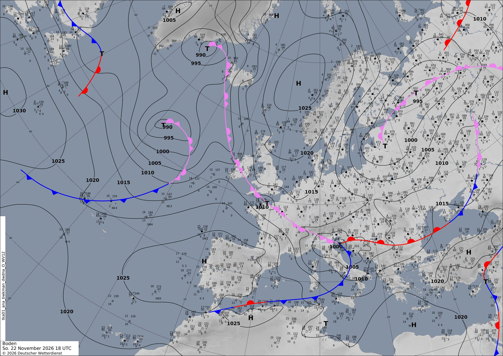

Una vaguada cruza Francia, el anticiclón la sigue y el miércoles vuelve la lluvia
Hoy domingo un frente cruza Francia con lluvia y el norte peninsular recibe chubascos. Mañana entra aire frío del norte y se instala un anticiclón, pero el martes por la noche asoma una nueva vaguada atlántica.
Europa y el Atlántico
La historia de hoy empieza en altura. En el mapa de 500 hPa hay una vaguada, un valle de aire frío en la circulación de altura, que baja desde el oeste de Irlanda hasta Asturias. Por su lado sur sopla una corriente en chorro de 211 km/h sobre Extremadura. Otro chorro, de 252 km/h, cruza los Alpes hacia Hungría. Fíjate en el mapa de altura.
En superficie, esa vaguada alimenta una borrasca de 991 hPa al suroeste de Irlanda. La carta de análisis del DWD de las 18 UTC dibuja un largo frente ocluido: va de Islandia a Irlanda, cruza Francia con una pequeña baja de 1010 hPa en el oeste del país y termina en otra baja de 1000 hPa en el norte del Adriático. En el satélite infrarrojo es la franja de nubes blancas que va en diagonal de Islandia a Italia. Mira aquí.
Así sigue la historia:
- Mañana lunes (23, 00 UTC): la vaguada avanza hacia el este. La pequeña baja pasa sobre París (1011 hPa) y la del Adriático se ahonda hasta 999 hPa al noroeste de los Balcanes. En la costa este del Adriático caen hasta 66 mm en 12 h. Más al sur, la CAPE llega a 1664 J/kg: es la energía que alimenta las tormentas. Detrás de la vaguada, un anticiclón de 1030 hPa se instala sobre Castilla y León.
- Pasado mañana martes (24): las altas presiones forman un puente desde Centroeuropa (1029 hPa) hasta Escandinavia (1035 hPa). Mientras, por el Atlántico ya llega la siguiente borrasca, de 1004 hPa sobre Irlanda.
- Noche del martes al miércoles (25, 00 UTC): una nueva vaguada baja hasta el norte de Galicia (544 dam), con un chorro de 237 km/h al noroeste. En superficie aparecen una baja sobre el canal de la Mancha (1005 hPa) y otra sobre el golfo de León (1012 hPa). Mira aquí.
A 72 horas, la forma exacta de esa vaguada todavía puede cambiar bastante en las próximas pasadas del modelo. Al otro lado del continente, una baja muy fría en altura (516 dam) gira sobre los países bálticos y se desplaza hacia Moscú. Allí, la borrasca de superficie baja hasta 991 hPa el miércoles.
En península ibérica y Baleares
Hoy la vaguada pasa por el norte peninsular. Detrás de ella entra aire del noroeste. Al chocar con la cordillera Cantábrica y los Pirineos, ese aire se ve obligado a subir: es la lluvia orográfica. El modelo da hasta 21 mm entre las 00 y las 12 UTC y otros 18 mm hasta medianoche, sobre todo en el tercio norte. El viento llega a 71 km/h de madrugada y baja a 56 km/h a medianoche. Mientras tanto, el sur queda lejos de la vaguada y del aire frío: a mediodía algún punto alcanza los 24 °C.
Mañana lunes manda el anticiclón de 1030 hPa centrado en Castilla y León. En su interior el aire baja lentamente, se seca y despeja el cielo. Con poco viento y noches largas, el suelo pierde mucho calor. A medianoche del martes el modelo marca hasta −4,7 °C en las zonas más frías del interior. Es el caldo de cultivo de la inversión térmica: el aire frío se queda atrapado en los valles, debajo de aire más templado, y pueden formarse nieblas por la mañana. De día, en cambio, se está bien: a mediodía del lunes hay máximas de hasta 22,5 °C en algún punto.
El martes el anticiclón se retira y la nueva vaguada atlántica se acerca. Esa noche vuelve la lluvia: hasta 28 mm por la mañana y 35 mm entre las 12 y las 24 UTC. Según el mapa, lo más intenso cae en el nordeste, cerca de la baja del golfo de León. Allí la CAPE sube hasta 552 J/kg, así que alguna tormenta es posible en Cataluña y Baleares. El viento vuelve a subir, hasta 63 km/h. A mediodía del martes, por delante de la vaguada, algún punto del sur o del Mediterráneo roza los 27 °C. Es el último aire templado antes de que llegue el frío: el miércoles de madrugada la temperatura media a 850 hPa en la Península baja a 4,9 °C (hoy era de 9,3 °C).
En Francia
Hoy Francia está bajo el frente ocluido y la pequeña baja que lo acompaña. Por eso le toca la lluvia más abundante del periodo: hasta 35 mm entre las 00 y las 12 UTC y 42 mm entre las 12 y las 24 UTC. Cerca del Mediterráneo la CAPE llega a 808 J/kg a mediodía, lo que permite algún chubasco tormentoso.
Mañana lunes el dibujo cambia. Al oeste queda el anticiclón ibérico, y al este las bajas de Italia y los Balcanes. Entre los dos, las isobaras se aprietan y el aire baja de norte a sur (por qué sopla el viento). El relieve lo encauza por el valle del Ródano y entre los Pirineos y el Macizo Central. Así nacen el mistral y la tramontana (vientos regionales), con hasta 76 km/h a medianoche y 66 km/h a mediodía. Mira aquí. Ese viento trae aire frío: a 850 hPa el país baja hasta −7 °C a mediodía.
El martes las altas presiones cubren casi todo el país. La noche es muy fría: a medianoche el modelo marca hasta −18,2 °C, probablemente en los valles altos de los Alpes. Durante el día, una pequeña baja junto a Córcega deja lluvia en el sureste, de hasta 38 mm en la mañana del martes. Esa noche la baja del canal de la Mancha empieza a traer lluvia al noroeste.
París y alrededores. Hoy domingo: entre 7 y 8 °C tanto a medianoche como a mediodía. Llueve poco por la mañana (4 mm) y más por la tarde y la noche (11 mm), cuando la pequeña baja pasa por encima. El viento es flojo, hasta 21 km/h. Lunes: algo de lluvia de madrugada (4 mm) y después seco. A mediodía, entre 5,5 y 6,5 °C, con viento casi en calma (8 km/h). Martes: medianoche fría, entre 0 y 2 °C, y a mediodía unos 6–7 °C. Sin lluvia durante el día. Por la noche puede caer 1 mm y el viento sube un poco, hasta 15 km/h. A medianoche del miércoles, entre 5 y 6 °C.
Lección del día: Masas de aire y temperatura en 850 hPa
Hoy aprenderás a seguir una masa de aire con la temperatura a 850 hPa, a unos 1500 m de altura. A esa altura el calor o el frío del suelo apenas influyen.
- Abre el mapa de temperatura a 850 hPa de hoy a las 00 UTC: mira aquí. Compara el sur peninsular (naranja, hasta 19 °C) con el norte de Francia (azul claro, unos 3 °C en París).
- Avanza hasta el lunes a mediodía: mira aquí. Los tonos azules bajan hacia el sur por detrás de la vaguada. En París el aire a 850 hPa ya está bajo cero (−1 °C) y en algunas zonas de Francia llega a −7 °C.
- Ahora mira el suelo. En París, a mediodía del lunes, el termómetro no pasa de 6,5 °C, y a medianoche del martes se queda entre 0 y 2 °C. El aire frío de arriba se nota abajo.
- Por último, salta a la noche del martes al miércoles (mira aquí). La temperatura media a 850 hPa en la Península baja a 4,9 °C: la nueva vaguada empuja el aire frío más al sur.
Ponte a prueba
3 preguntas sobre el tiempo de hoy. Puedes mirar el mapa antes de contestar.
¿Por qué soplará con fuerza el viento del norte en el valle del Ródano el lunes?
El anticiclón ibérico (1030 hPa) y las bajas de Italia y los Balcanes aprietan las isobaras sobre el sureste de Francia, y el valle del Ródano canaliza el aire: es el mistral. Mira aquí y repasa la ficha vientos regionales.
Entre hoy y el lunes a mediodía, el color azul del mapa de temperatura a 850 hPa se extiende sobre Francia. ¿Qué significa?
La temperatura a 850 hPa sirve para seguir las masas de aire: en París pasa de unos 3 °C a −1 °C. Mira aquí y consulta la ficha masas de aire.
¿Qué traerá a la Península la vaguada que aparece al norte de Galicia en la noche del martes al miércoles?
La vaguada y la baja del golfo de León dejan hasta 35 mm en 12 h y CAPE de 552 J/kg en el nordeste, aunque a 72 h el modelo todavía puede cambiar. Mira aquí y repasa la ficha vaguada y dorsal.
La carta oficial
Análisis de superficie del servicio meteorológico alemán (DWD) válido el 22/11/2026 a las 18 UTC, dibujado por meteorólogos a partir de observaciones. Aquí sí hay frentes: azul con triángulos, frío; rojo con semicírculos, cálido; morado, ocluido. Las borrascas son T y los anticiclones H. Cómo leer esta carta.
